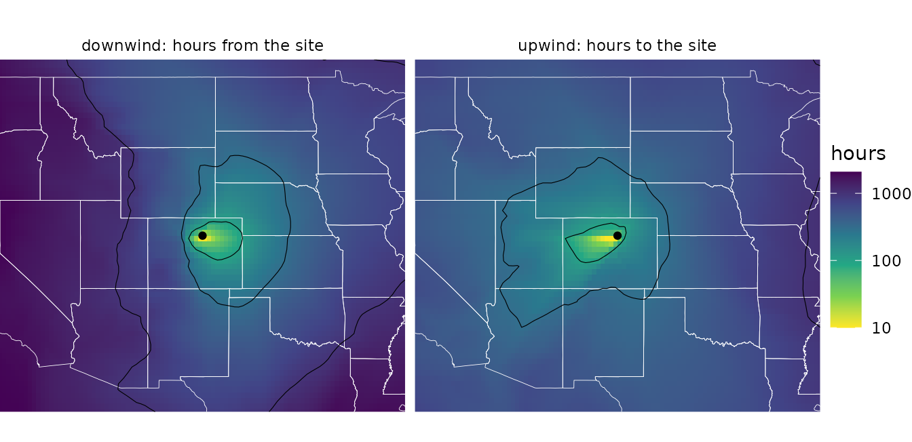
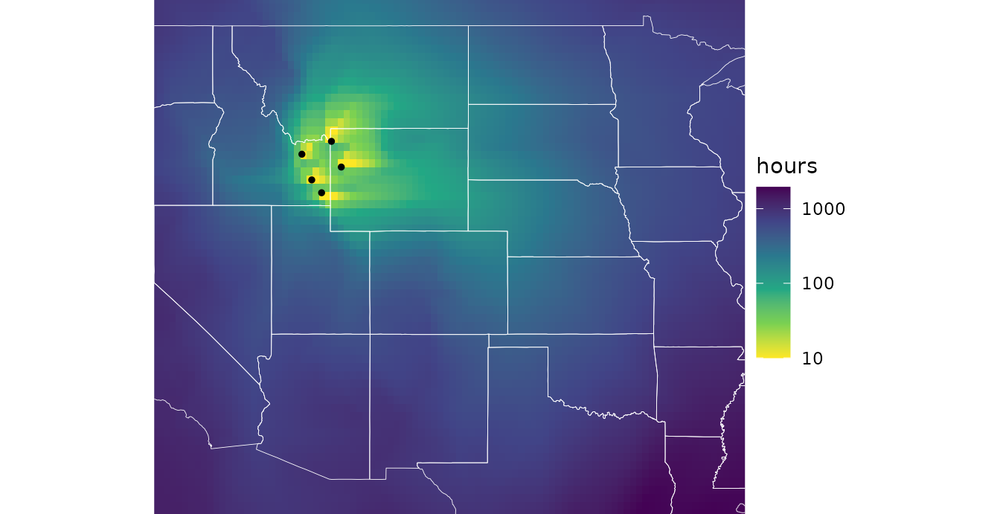
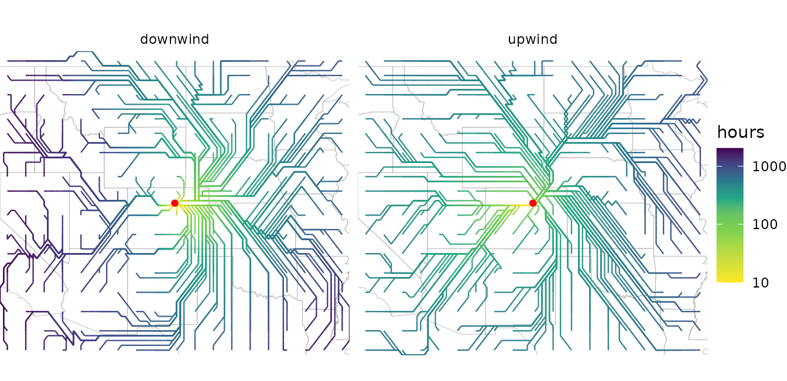
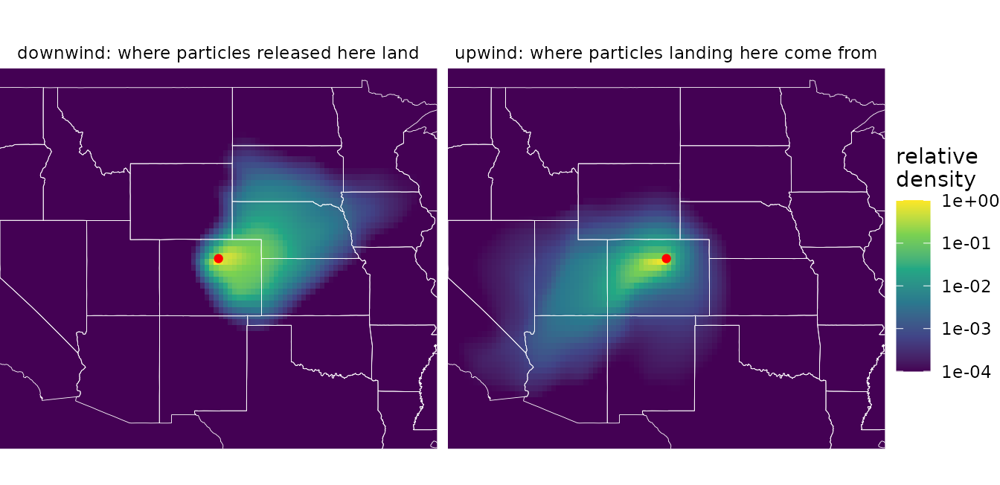
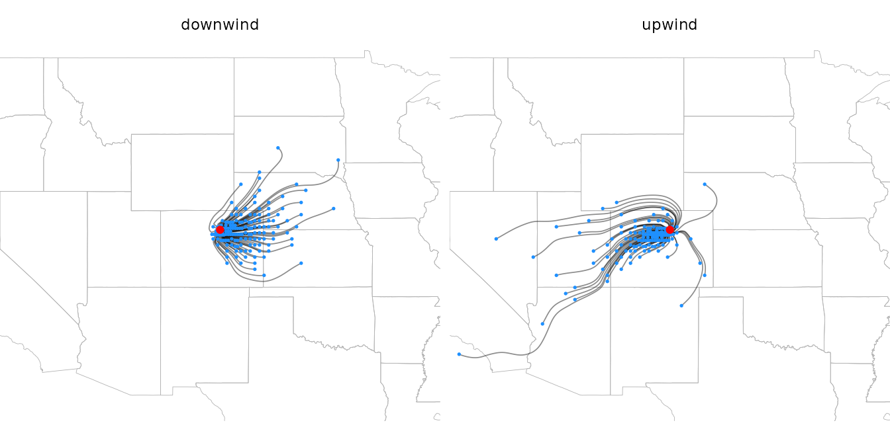
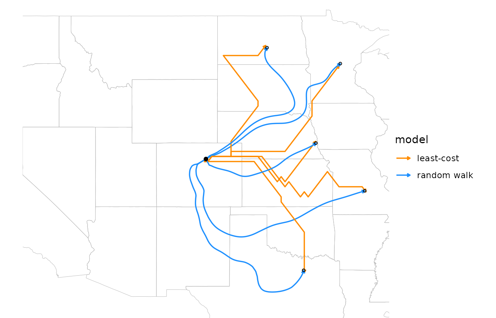
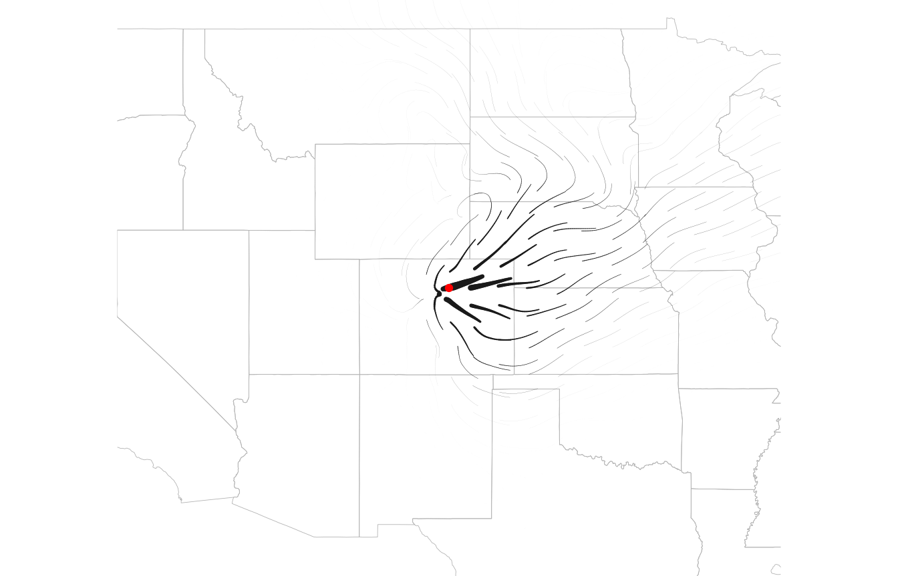

Windsheds
windsheds.RmdA watershed is the area that drains to a point on a river. By analogy, a windshed is the area that wind connects to a site. Because wind is directional, every site has two:
- Its downwind windshed: where wind carries material released at the site, such as its pollen, seeds, or spores.
- Its upwind windshed: where material arriving at the site comes from.
The two are usually very different. Under prevailing westerlies, a site’s downwind windshed stretches to the east and its upwind windshed to the west, so the places a population can colonize are not the places its immigrants come from.
This article shows how to map windsheds with both of windscape’s
connectivity models, how to trace the routes that connect a site to its
windshed, and how to summarize windsheds for comparison across sites. It
uses model settings such as half_life without explaining
them in depth; the connectivity
models article covers how the models work and how to choose their
settings.
library(windscape)
library(ggplot2)
rose <- windscape_example("wind_rose")
site <- cbind(-105, 40) # north-central Colorado
states <- map_data("state")
borders <- geom_path(data = states, aes(long, lat, group = group),
color = "white", linewidth = 0.15, inherit.aes = FALSE)
us <- coord_quickmap(xlim = c(-120, -90), ylim = c(30, 50), expand = FALSE)
facets <- theme(strip.text = element_text(margin = margin(4, 0, 4, 0)))Least-cost windsheds
A least-cost windshed maps the fastest wind route between a site and
every place in the landscape. least_cost() returns the
travel time along that route, in hours (for a rose built with
trans = 1 from winds in m/s): downwind, from the site to
each cell, and upwind, from each cell to the site.
down <- least_cost(rose, site, direction = "downwind")
up <- least_cost(rose, site, direction = "upwind")
d <- rbind(data.frame(as.data.frame(down, xy = TRUE), windshed = "downwind: hours from the site"),
data.frame(as.data.frame(up, xy = TRUE), windshed = "upwind: hours to the site"))
ggplot(d, aes(x, y)) +
geom_raster(aes(fill = pmax(hours, 10))) + # floor at 10 hours for the log scale
borders +
geom_contour(aes(z = hours), breaks = c(100, 300, 1000), color = "black", linewidth = 0.2) +
annotate("point", site[1], site[2], size = 1.5) +
facet_wrap(~windshed) +
scale_fill_viridis_c(name = "hours", trans = "log10", direction = -1) +
us + theme_void() + facets
Travel times are a measure of accessibility, not a prediction of when
particles arrive: each step’s cost is the time to cross it at the
long-run average wind speed in that direction, including the time the
wind spends blowing other ways. Small values mean strong connectivity.
rate = TRUE returns the inverse, a flow rate, for analyses
where large values should mean strong connectivity, as they do for
random walks.
Given several sites, least_cost() maps the travel time
to or from the nearest one, for example the windshed of a whole
population or species range, represented by a set of occurrence
points:
range_pts <- cbind(c(-112, -111, -110.5, -112.5, -111.5), c(43, 44.5, 43.5, 44, 42.5))
down_range <- least_cost(rose, range_pts, direction = "downwind")
ggplot(as.data.frame(down_range, xy = TRUE), aes(x, y)) +
geom_raster(aes(fill = pmax(hours, 10))) +
borders +
annotate("point", range_pts[, 1], range_pts[, 2], size = 1) +
scale_fill_viridis_c(name = "hours", trans = "log10", direction = -1) +
us + theme_void()
Least-cost paths
least_cost_paths() returns the routes behind those
travel times, as path data that geom_wind_path() draws. By
default it traces paths between the site and a regular grid of about
n points across the domain, which shows the network of
fastest routes:
paths <- rbind(
data.frame(least_cost_paths(rose, site, n = 300, direction = "downwind"), windshed = "downwind"),
data.frame(least_cost_paths(rose, site, n = 300, direction = "upwind"), windshed = "upwind"))
head(paths)
#> trail site to step hours x y windshed
#> 1 1 1 1 0 0.00000 -105.1579 39.84127 downwind
#> 2 1 1 1 1 23.30238 -105.4737 39.84127 downwind
#> 3 1 1 1 2 52.75803 -105.7895 39.84127 downwind
#> 4 1 1 1 3 113.33490 -106.1053 39.84127 downwind
#> 5 1 1 1 4 254.08530 -106.4211 39.84127 downwind
#> 6 1 1 1 5 324.87818 -106.7368 40.15873 downwind
# travel time between each vertex and the site: elapsed time on downwind paths, and time
# remaining on upwind paths
paths$from_site <- ifelse(paths$windshed == "downwind", paths$hours,
ave(paths$hours, paths$windshed, paths$trail, FUN = max) - paths$hours)
ggplot(paths, aes(x, y)) +
geom_path(data = states, aes(long, lat, group = group), color = "gray70",
linewidth = 0.15, inherit.aes = FALSE) +
geom_wind_path(aes(color = pmax(from_site, 10)), linewidth = 0.4, arrow = NULL) +
annotate("point", site[1], site[2], color = "red", size = 1.5) +
facet_wrap(~windshed) +
scale_color_viridis_c(name = "hours", trans = "log10", direction = -1, values = c(0, .5, .7, .85, 1)) +
us + theme_void() + facets
Each row is a vertex of a path, ordered in the direction of travel:
downwind paths start at the site, and upwind paths end there.
hours accumulates along each path, and its final value is
the travel time between the pair. Paths move between neighboring cell
centers, in eight directions, so they are built from horizontal,
vertical, and diagonal segments.
The paths from one site form a tree: once two paths meet, they share the rest of their route to or from the site. Heavily shared branches are the main corridors of wind transport. (Where two diagonal steps cross between cell centers, two branches can appear to cross without meeting.)
Paths can also run to or from chosen points, with to.
pairs = "nearest" traces one path for each site, to or from
the point in to with the shortest travel time, and
pairs = "matched" pairs sites and
to row by row; see ?least_cost_paths.
Random walk windsheds
A random walk windshed instead follows particles diffusing through
the wind rose along all routes, in proportion to how much wind flows
along each, and depositing as they go. In stream mode,
random_walk() returns the long-run result of continuous
release from the site. Its deposition layer is the downwind
windshed: the probability density (per km^2) that a particle released at
the site lands in each cell.
down <- random_walk(rose, site, mode = "stream", direction = "downwind", half_life = 48)
names(down)
#> [1] "residence" "deposition"Upwind walks with a finite half-life have two layers that describe the upwind windshed, and they answer different questions:
-
deposition: how likely a particle released in each cell is to be deposited at the site (by default, as a density per km^2 of the site’s cell). This asks, “if particles were released here, would they reach the site?” -
origin: the share of the particles deposited at the site that come from each cell (by default, per km^2). This asks, “of the particles reaching the site, what share came from here?”
origin is deposition weighted by how much
each cell releases, and normalized. By default, every cell releases the
same amount per km^2, so the two maps have the same shape. They differ
when release varies, given as a raster via the source
argument, such as the abundance of a species that produces the
particles: then origin shows where the site’s immigrants
actually come from.
up <- random_walk(rose, site, mode = "stream", direction = "upwind", half_life = 48)
d <- rbind(data.frame(fortify(down)[c("x", "y")], value = fortify(down)$deposition,
windshed = "downwind: where particles released here land"),
data.frame(fortify(up)[c("x", "y")], value = fortify(up)$origin,
windshed = "upwind: where particles landing here come from"))
d$value <- d$value / ave(d$value, d$windshed, FUN = max) # relative to each windshed's peak
ggplot(d, aes(x, y)) +
geom_raster(aes(fill = value)) +
borders +
annotate("point", site[1], site[2], color = "red", size = 1.5) +
facet_wrap(~windshed) +
scale_fill_viridis_c(name = "relative\ndensity", trans = "log10",
limits = c(1e-4, 1), oob = scales::squish) +
us + theme_void() + facets
These windsheds point the same ways as the least-cost ones, but they measure something different. A least-cost map gives every place a travel time, however remote. A random walk map gives the share of the site’s material that actually gets there, which falls off steeply with distance as particles are deposited along the way (note the log scale). The half-life sets the windshed’s reach: short half-lives keep it close to the site, and long ones extend it across the landscape.
Like least_cost(), random_walk() accepts
several sites, releasing one unit from each grid cell that contains a
site. For uneven release, such as from a population whose abundance
varies across its range, give init as a raster of release
amounts on the rose’s grid:
abundance <- rose[[1]] * 0 # a raster on the rose's grid
abundance[terra::cellFromXY(abundance, range_pts)] <- c(5, 1, 2, 1, 3)
range_windshed <- random_walk(rose, abundance, mode = "stream", half_life = 48)Random walk paths
random_walk_paths() is the random walk counterpart to
least_cost_paths(), and returns path data in a similar
layout (trail, step, x, and
y), for drawing with geom_wind_path().
Despite its name, it involves no randomness. It doesn’t
simulate the zigzagging paths of individual particles. It traces
streamlines of the walk’s net flux of material: the average routes along
which material moves. Running it twice gives identical results.
Without to, random_walk_paths() places the
ends of n paths in proportion to where material is
deposited (or leaves the domain), so each path carries an equal share of
the released material. The density of paths shows where material goes,
and a dot at the end of each path shows where its share lands:
rw_paths <- rbind(
data.frame(random_walk_paths(rose, site, n = 150, half_life = 48), windshed = "downwind"),
data.frame(random_walk_paths(rose, site, n = 150, half_life = 48, direction = "upwind"),
windshed = "upwind"))
# where each path's material lands (downwind) or originates (upwind)
id <- paste(rw_paths$windshed, rw_paths$trail)
ends <- rw_paths[ifelse(rw_paths$windshed == "downwind", !duplicated(id, fromLast = TRUE), !duplicated(id)), ]
ggplot(rw_paths, aes(x, y)) +
geom_path(data = states, aes(long, lat, group = group), color = "gray70",
linewidth = 0.15, inherit.aes = FALSE) +
geom_wind_path(alpha = 0.5, linewidth = 0.3, arrow = NULL) +
geom_point(data = ends, size = 0.3, color = "dodgerblue") +
annotate("point", site[1], site[2], color = "red", size = 1.5) +
facet_wrap(~windshed) +
us + theme_void() + facets
Upwind paths start where material originates, placed in proportion to
origin, and end at the site. Because most material is
deposited close to where it is released, most paths are short; a larger
n resolves more long-distance routes.
Comparing the two kinds of paths
The two models answer different questions about the route between two
places. A least-cost path is the single fastest route. A random walk
path is the average route of the material that actually makes the trip,
which spreads across all routes. Given the same destinations with
to, the difference is easy to see:
to <- cbind(c(-94, -92, -97, -100, -96), c(46, 38, 33, 47, 41))
both <- rbind(
data.frame(least_cost_paths(rose, site, to)[c("trail", "step", "x", "y")], model = "least-cost"),
data.frame(random_walk_paths(rose, site, to = to, half_life = 48), model = "random walk"))
ggplot(both, aes(x, y)) +
geom_path(data = states, aes(long, lat, group = group), color = "gray70",
linewidth = 0.15, inherit.aes = FALSE) +
geom_wind_path(aes(color = model, group = interaction(model, trail)), linewidth = 0.6) +
annotate("point", site[1], site[2], size = 1.5) +
annotate("point", to[, 1], to[, 2], size = 1, shape = 1) +
scale_color_manual(values = c("darkorange", "dodgerblue")) +
us + theme_void()
Least-cost paths are built from grid steps and can zigzag where the fastest route lies between two neighbor directions. Random walk paths are smooth, and can depart widely from the fastest route: the material that reaches the southernmost point travels mostly by way of New Mexico and Texas, swinging around with the winds there, rather than taking the most direct fast route.
Paths to chosen points no longer carry equal shares of material, so
with to, the density of random walk paths has no meaning.
Points the material doesn’t reach can’t be traced and are dropped with a
warning.
Flux
Paths sample the flow of material at a few places. To map it
everywhere, random_walk() returns the net flux with
flux = TRUE: the direction and rate at which material moves
through each cell. It’s a wind_field, so the wind field
layers draw it. Flux spans orders of magnitude, from near the site to
the windshed’s fringes, so it’s clearer to show its magnitude as line
width (here on a square-root scale) and draw all trails the same length.
Arrowheads don’t shrink with line width, so they’re left off here;
material flows outward from the site.
down <- random_walk(rose, site, mode = "stream", half_life = 48, flux = TRUE)
ggplot(down$flux, aes(x, y)) +
geom_path(data = states, aes(long, lat, group = group), color = "gray70",
linewidth = 0.15, inherit.aes = FALSE) +
geom_wind_trail(aes(linewidth = after_stat(speed)), fixed_length = TRUE, res = 25,
arrow = NULL, lineend = "round") +
annotate("point", site[1], site[2], color = "red", size = 1.5) +
scale_linewidth(trans = "sqrt", range = c(0, 2), guide = "none") +
us + theme_void()
Flux shows the transport that produces a windshed, which its shape
alone doesn’t: across the flanks of a plume, for example, material moves
mostly downwind rather than sideways toward lower density. For an upwind
walk (which requires a finite half_life), flux is the
transport of the material that ends up at the site, showing the routes
by which it arrives.
Comparing windsheds across sites
To compare windsheds among many sites, ws_summarize()
reduces a windshed to summary statistics, including the distance and
bearing from the site to its centroid, and the windshed’s mean bearing
and spread of bearings. It expects large values to mean strong
connectivity, so use rate = TRUE for least-cost
windsheds:
ws_summarize(least_cost(rose, site, rate = TRUE), site)[c("centroid_distance", "centroid_bearing")]
#> centroid_distance centroid_bearing
#> 152.48696 82.39936
ws_summarize(down$deposition, site)[c("centroid_distance", "centroid_bearing")]
#> centroid_distance centroid_bearing
#> 167.76064 86.73836Both windsheds center east of the site. See
?ws_summarize for all the statistics.
Plotting tips
The maps above convert windsheds to data frames:
as.data.frame(x, xy = TRUE) for least-cost rasters, and
fortify() for random walk results. The
geom_spatraster() layer from the tidyterra package
plots any SpatRaster directly, including a single windshed
layer:
ggplot() +
tidyterra::geom_spatraster(data = least_cost(rose, site)) +
scale_fill_viridis_c(trans = "log10")Windsheds span orders of magnitude, so log color scales usually work best. Least-cost travel times are zero at the site and random walk densities approach zero far from it, so floor or squish values before log-transforming, as in the maps above.